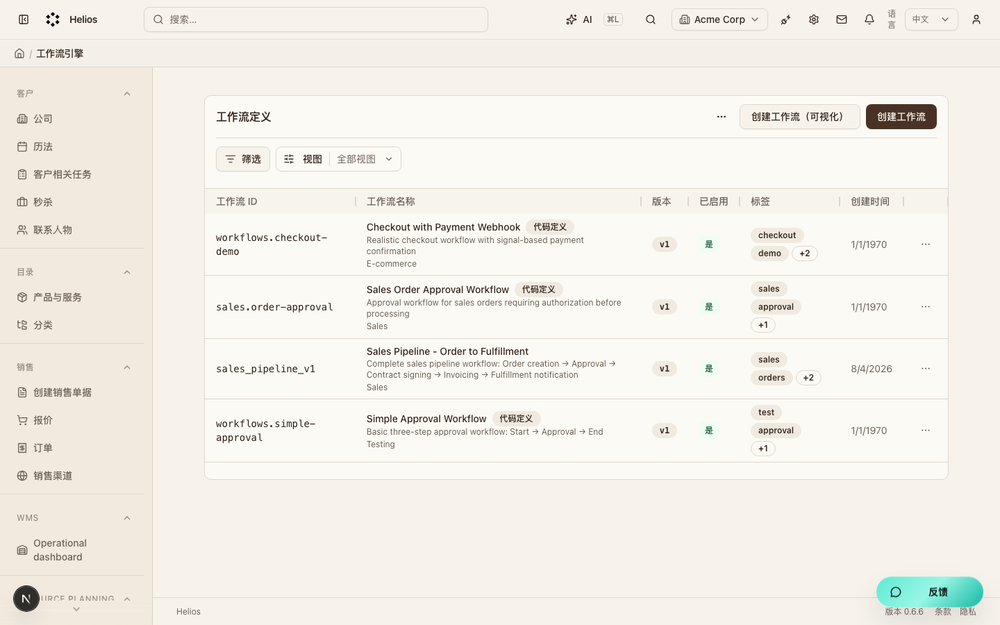
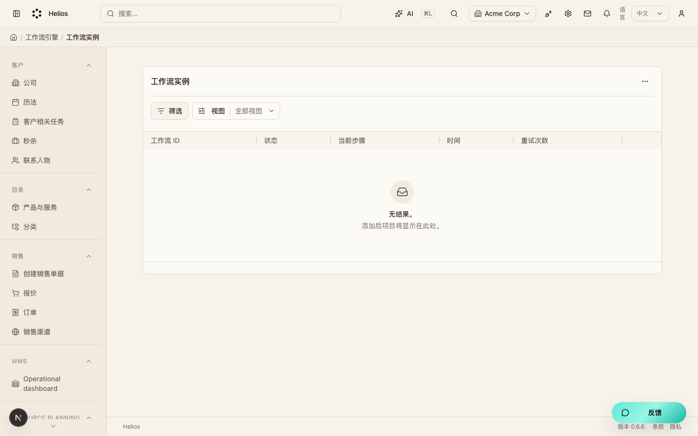
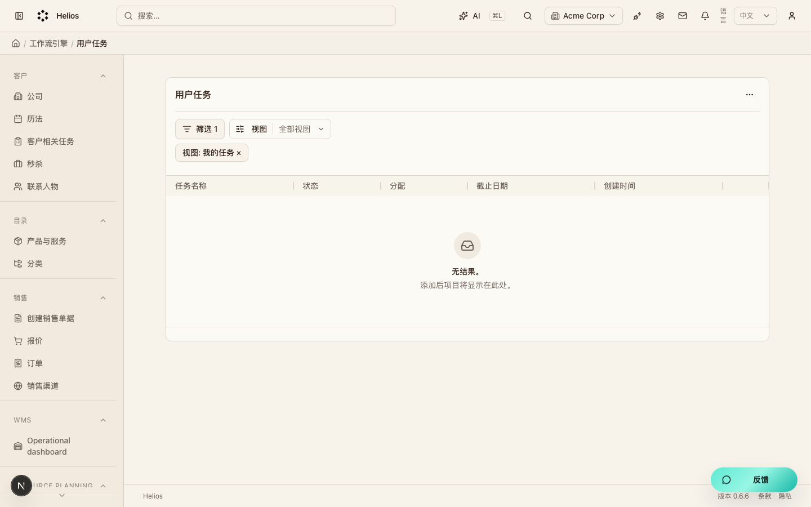

工作流（workflows）
跨模块流程编排。定义流程后产生实例与人工任务。
演示环境 http://localhost:3000 · admin@acme.com · 2026-08-08
后台入口
| 页面 | 路径 |
|---|---|
| 流程定义 | /backend/definitions |
| 流程实例 | /backend/instances |
| 任务 | /backend/tasks |
要点
- 事件可触发流程；任务在后台待办中处理。
界面截图
流程定义
入口：/backend/definitions

流程实例
入口：/backend/instances

任务列表
入口：/backend/tasks
